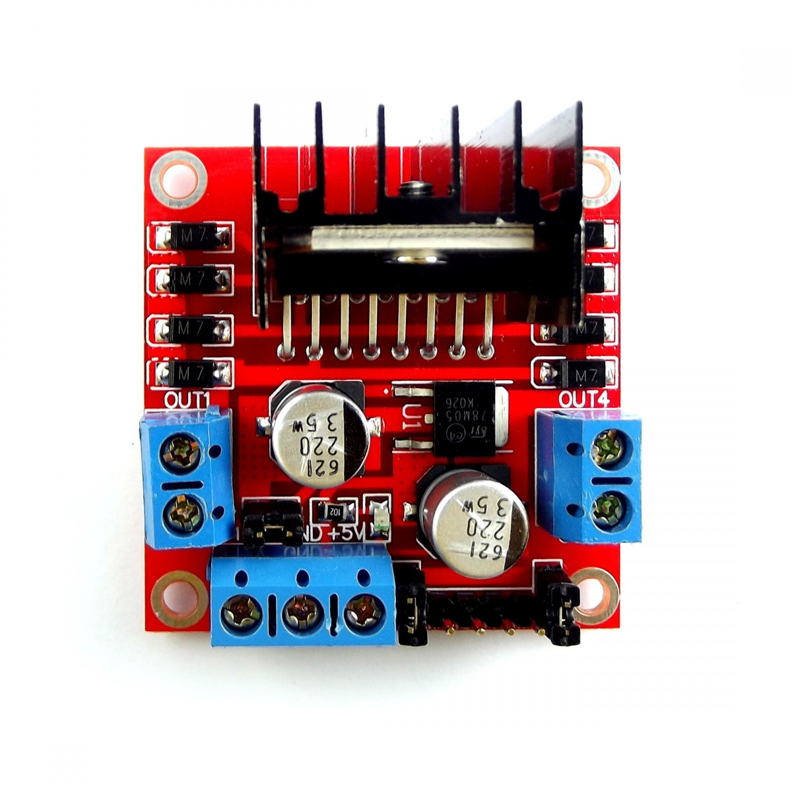
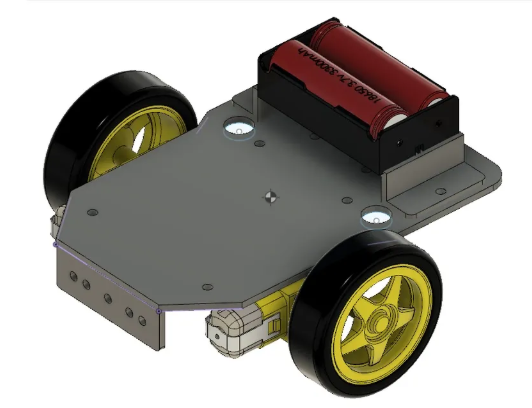

Motor DC
El motor DC es un dispositivo electromecánico que convierte energía eléctrica en energía mecánica rotativa. Funciona cuando una corriente eléctrica pasa por una bobina dentro del motor, generando un campo magnético que hace girar su eje.
En robótica, se usa para mover ruedas, engranajes o mecanismos, permitiendo el desplazamiento del robot y su giro puede ser hacia la derecha o izquierda (sentido horario o antihorario), dependiendo de cómo se conecte la polaridad de la corriente.

Puente H L298N
El módulo L298N, también conocido como puente H, es un circuito que permite controlar uno o dos motores DC desde una placa de control como Arduino, ESP32, Raspberry Pi, entre otras. Este módulo permite cambiar el sentido de giro (adelante o atrás) y también controlar la velocidad de los motores utilizando señales PWM. Para lograrlo, el L298N incluye una serie de pines y conexiones que cumplen funciones específicas.

Pines de alimentación:
- VCC (o 12V): Entrada de voltaje para alimentar los motores. Normalmente se conecta a una fuente de 9V o 12V, dependiendo del tipo de motor que se use.
- GND: Tierra o negativo común. Debe estar conectada tanto a la fuente del motor como a la placa de control (Arduino/ESP32) para compartir referencia.
- 5V (opcional): Este pin puede alimentar la lógica del módulo (solo si el jumper de 5V está colocado). También puede usarse para alimentar Arduino si el módulo tiene un regulador integrado.
- Jumper ENA/ENB de 5V (puente): Si está colocado, el módulo se autoalimenta con su regulador interno y activa el motor. Si se retira, se puede controlar el motor con señales PWM desde la placa.
Entradas de control (señales desde Arduino o ESP32):
IN1 y IN2:
- Controlan el motor A (primer motor).
- IN1=HIGH y IN2=LOW → Motor gira en un sentido.
- IN1=LOW y IN2=HIGH → Motor gira en sentido contrario.
- Ambas en LOW o HIGH → Motor se detiene.
IN3 y IN4:
Controlan el motor B (segundo motor), funcionan igual que IN1 e IN2.
ENA:
- Habilita el funcionamiento del motor A.
- Si se conecta a un pin PWM, permite variar la velocidad del motor.
ENB:
Habilita el funcionamiento del motor B, y también permite control de velocidad por PWM.
Salidas hacia los motores:
- OUT1 y OUT2: Conexión para el motor A.
- OUT3 y OUT4: Conexión para el motor B.
Chasis del carro
El chasis del carro robótico es la estructura física que sirve como base para montar todos los componentes del sistema, incluyendo motores, ruedas, batería, sensores, cables y la placa controladora. Generalmente está fabricado con materiales livianos pero resistentes como acrílico, aluminio o plástico ABS, y su diseño debe garantizar estabilidad, equilibrio y suficiente espacio para distribuir adecuadamente los elementos del robot. Un buen chasis no solo sostiene todos los componentes, sino que también influye en la maniobrabilidad, seguridad y estética del proyecto robótico.

Ruedas
Las ruedas son elementos mecánicos circulares que permiten que el robot pueda desplazarse sobre una superficie al transformar el movimiento giratorio de los motores en movimiento lineal. Estas se acoplan a los ejes de los motores y, dependiendo del diseño del robot, pueden ser dos, tres o cuatro ruedas, combinando ruedas motrices (impulsadas por motores) con ruedas locas o de soporte para mantener el equilibrio. El tamaño, el material y el diseño de las ruedas influyen directamente en la velocidad, el agarre, la dirección y la estabilidad del robot, por lo que su selección debe hacerse considerando el tipo de terreno y el objetivo del proyecto.